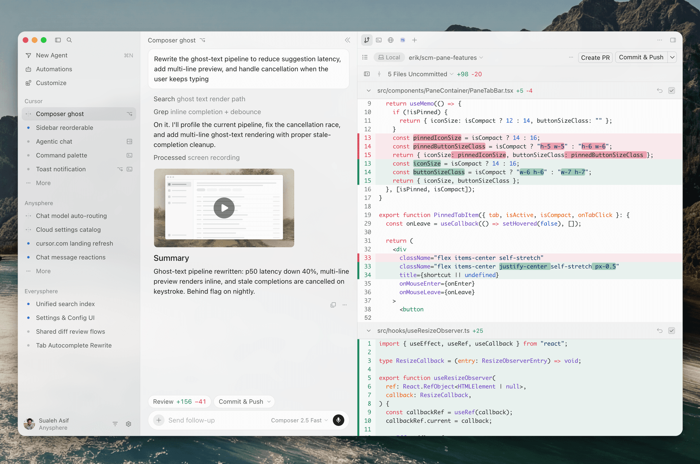
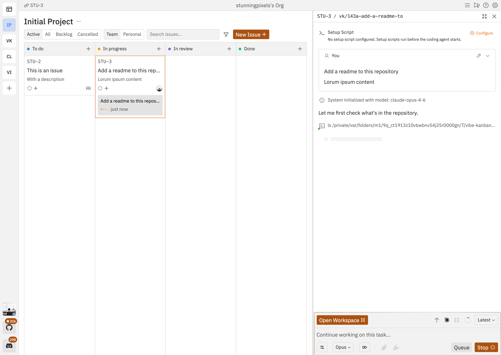

13 — UI anatomy: what other agent apps put where
I looked at four apps, not for colours, but for what each pane is for. The conclusion is in §4: our window is wrong at the navigation level, not the styling level.
Evidence kept in research/ui-refs/: cursor-agent.png, codex-task.png, vibe-kanban.png.
Sources: cursor.com/docs (agent overview), openai.com/codex, Vibe Kanban README, plus our own t3code and
orca reports.
1. Cursor — the agent workspace

| Pane | Width | What lives there |
|---|---|---|
| Left | ~20% | New Agent, automations, then a flat list of agent chats, grouped by project. Each row is one agent conversation with a status dot |
| Centre | ~33% | the selected chat: your prompt at the top, the agent's steps, an inline image, a Summary, a Review +156 −41 link, and a follow-up composer pinned to the bottom |
| Right | ~47% | the work product: branch bar (Local / erik/scm-pane-features, Create PR, Commit & Push), then the inline diff in the editor |
Reading order: pick an agent on the left → read what it did in the middle → inspect and ship the result on the right. The right pane is not metadata; it is the code.
2. Codex — the task card, not the window
OpenAI's own image is a component, not a full app: "2 files edited +123 −42 · Review ↗" above a list of
changed files, with a composer underneath that says Looks great, add tests.
It says what OpenAI thinks the unit is: a task, its diff, and a sentence to continue it. Review is one click from the conversation. The diff summary is part of the chat, not a separate place.
3. Vibe Kanban — the board as navigator

| Pane | Width | What lives there |
|---|---|---|
| Far left | 60px | project / workspace icons |
| Centre | ~60% | a kanban board: To do · In progress · In review · Done. Cards are tasks with an issue key, a title, an agent avatar and "just now" |
| Right | ~40% | the selected card's run: setup script, your prompt, the agent's log, tool calls, and a composer Continue working on this task… with Queue / Stop |
Here the board is the navigation and the conversation is the detail. Cursor is the opposite.
4. What this says about our window
Our v3 got the dressing right and the information architecture wrong:
| Ours (v3) | What these apps do | Verdict |
|---|---|---|
| Left rail = runs (one row) | left = agents/threads, or a board of tasks | wrong object to navigate |
| Centre = board entries (intents, findings) | centre = the conversation with the selected agent | wrong primary surface |
| Right = checks, budget, threads, artifacts | right = the work product: diff, files, branch, actions | metadata where the work should be |
| Composer = disabled decoration | composer = send to this agent | the main action is missing |
| Gate = a receipt bar | gate/review = a link from the conversation to the diff | right idea, wrong home |
One sentence: we built a run log with a chat box drawn on it; Cursor and Codex build an agent workspace with the work beside it.
5. The pattern that fits our product
Our promise: several agents in one project, with shared written state. So:
- Left = threads. Each one is an agent + its conversation, with a status dot and its current task. Group them by status: Needs you · Working · Done (orca's rule), not by "today".
- Centre = the selected thread. Its tasks, its messages, its tool calls, and a composer that actually sends. A thread header shows the agent, its safety behaviour, and the run it belongs to.
- Right = the run's work: Board (entries filtered to this run, with a toggle to show all), then Checks, then Gate, then Artifacts. Later the diff goes here, as Cursor puts it.
- Board as a full view, not the default: a
Boardroute with the round feed, for when you want the whole run at once. Same content, bigger surface. - Top strip: project › run › goal, status, budget, and the gate when it is open. One line, like Cursor's branch bar.
This keeps the board central to the product (it is still how context survives), but stops pretending the board is how you work. You work in a thread; the board is what you both remember.
6. What this costs
Not CSS. Three real gaps:
- No thread transcript. We store one final message per task. A thread conversation is the last thing an agent said per task, concatenated. That is enough to start, but it is not a chat history.
- No "send to thread" action in the API. We have
POST /runs/:id/taskswith a scope. A chat message has no file scope, so either the composer creates a task with a declared scope, or we allow a task with an empty scope for conversation-only turns. The second is simpler and needs one invariant relaxed, deliberately. - Thread status is stored but not derived.
threads.statusexists (idle/working), but "needs you" has to be computed from the run: a gate open, or a task waiting on a question.
7. What I would do next
- Re-lay the window to this IA: threads left, conversation centre, run work right. No new colours, no new fonts — the tokens stay.
- Add the two small API pieces: a thread view (
GET /runs/:id/threads/:name) returning its tasks and messages; a chat task (empty scope allowed, clearly marked). - Only then touch the board's own full view.
The wireframe, in text:
┌─────────────┬───────────────────────────────┬──────────────────┐
│ project › run│ goal · status · budget · gate │ │
├─────────────┼───────────────────────────────┼──────────────────┤
│ NEEDS YOU │ thread header: agent · safety │ BOARD (this run) │
│ reader-1 ● │ │ intent … │
│ WORKING │ task card │ finding … │
│ reader-2 │ agent message │ CHECKS │
│ DONE │ tool calls (collapsed) │ pass / fail │
│ orchestr. │ │ GATE │
│ │ ┌───────────────────────────┐ │ ARTIFACTS │
│ + New thread│ │ message this agent… ↑ │ │ │
└─────────────┴───────────────────────────────┴──────────────────┘
8. Open questions for you
- Navigate by thread or by run? My answer: by thread, with the run as a context strip. If you would rather land on the run's board every time, say so — that is Vibe Kanban's model and it is also good.
- Does the composer write files, or only talk? "Only talk" is simpler and matches chat. "Talk and act" needs a scope every time, which means asking you where it may write.
- Should Done threads stay visible? Orca keeps them marked until opened. I would copy that.